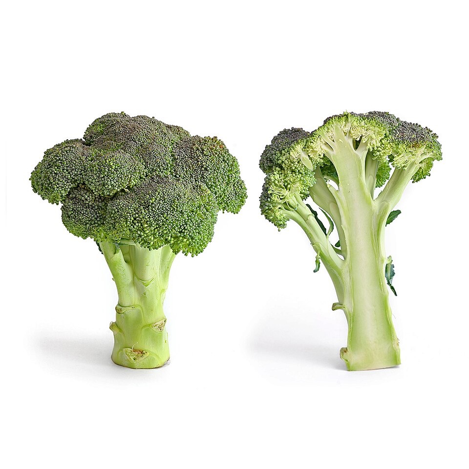

Broccoli
- Fiber rich
- Vitamin C
- Supports gut health
Click a food to see benefits, then add it to your list.

My Superfood is a practical nutrition catalog by Tilman Resch. It helps people explore whole foods, supplement kits, individual supplements, healthy recipe ideas, and saved lists for personal organization.
The site is informational only and does not provide medical advice. Food and supplement decisions should be discussed with qualified health professionals.